The Second Cohort Of The Plutus Pioneer Programme
For a more up to date version, please see: https://github.com/jonathondilworth/blockchain-notes
I have made the decision to begin making notes and documenting all lectures and exercises found within the Plutus Pioneer Program (cohort two). The writing style will be two-fold: technical, but creative. This is for numerous reasons. Firstly, writing does aid the cognitive ability to solve problems [1], Plutus is a new platform, Plutus-core is a new language, Haskell is somewhat unique and understanding aspects of how this whole system fits together requires an element of creative thinking and problem solving. Similarly, these technologies 1. are novel in nature, as such, it may be required to do some creative writing in order to explore new potential ideas.
I've been using distributed ledgers and blockchain consensus algorithms for over ten years. I remember buying BTC at $3 and seeing it hit $7 was mind blowing for me (at the time). It's a shame I never held on to many, but I just look back and laugh. Why? Because it's not about money, although most people would disagree (this is one of the reasons why I feel somewhat at home within the Cardano community). It's about technology and ultimately: changing the world. It's a strange thought: we are individuals, we have choices, and if we decide to do so, we can make a real difference here. If there is anything worth pursuing, it's making a difference. This is why I decided to devote as much time as possible to the difficult task of participating within the Plutus Pioneer Program and brushing up on Haskell.
I would like to express my gratitude to IOHK for constructing this program and accepting me as a candidate. Furthermore, I would like to thank my family for their continual support in my efforts to pursue a career path which isn't thought to be conventional.
I believe I can speak for the entire community when I extend my sincerest thanks to the world class engineers and scientists who have contributed to building Cardano as of current. Charles, you will are and will continue to be an inspiration to us all and to the world. I hope we can all collectively strive to make positive societal change.
In Progress
To any and all IOHK employees: feel free to contribute by adding a foreword via a pull request.
As these are technical notes, the format for each set of lecture notes will be written to a pseudo-technical specification. This means each set of notes should follow a template, making it easier for readers to break down and understand. Each set of notes will be presented in accordance with the following schema:
I will be doing my best to keep to the above schema for each set of notes, but this isn't a publishable book or formal technical documentation, so expect a degree of variance in style.
Note: both footnotes and references will be used within this document set, which may seem confusing at times. However, please be aware that footnotes are formatted as enumerated superscript values, whereas footnotes are enumerated bracketed values.
Quotes: You will see various quotes throughout the text, this is simply how I like to write.
See Table Of Contents
In Progress
These notes are for anybody and everybody (somewhat vague, I know), but the audience could range from those who are current Plutus Pioneers, individuals who are just following the programme, developers from other communities, or even legislators (however, I highly doubt they would be reading my notes / documentation on Cardano). But ultimately, we are all here for the same reason, we believe in what we're building and the best way to approach adoption is to allow everybody to see what you're doing, at least, that would be my intuition.
But, to reduce the scope a little bit and be somewhat more realistic, the intended audience is really for those who are looking to develop on Cardano.
In Progress
Anyone is free to contribute via a pull request.
Note: Currently Writing Notes On All Lectures Marked With '-'
In Progress
In Progress
[1] Kellogg, R.T., 1999. The psychology of writing. Oxford University Press.
[2] Jones, M.P., 2021. Plutus Tx: compiling Haskell into Plutus Core. Viewed 2nd August 2021. https://iohk.io/en/blog/posts/2021/02/02/plutus-tx-compiling-haskell-into-plutus-core/
1. The technologies I am referencing are Distributed Ledgers and Blockchain Consensus Algorithms — 'cryptocurrencies'
In Progress
In Progress
In Progress
Within this set of notes the following information will be presented. Firstly, the courses administration details are provided. Secondly, a coverage of the course content is outlined. Shortly thereafter, details about Plutus, the difficulty of the program and the (pseudo-optional) pre-requisites are given. Furthermore, an extensive explanation of the (E)UTxO model (which facilitates the possibility of transactions on the Cardano network - Cardanos unique accounting model) is fully explained. In addition, building an example contract is presented, which includes how to setup a NIX shell, how to start Plutus-playground-server and enable it to be locally accessible from the browser. Smart Contract compilation is demonstrated and an example of how to use the Plutus platform in whole is shown. As pioneers we are then encouraged to try this ourselves.
Note: this document contains information pulled in from the Plutus Pioneer Lecture series in addition to information provided by reliable sources, such as videos, papers and statements made by employees of IOHK. Furthermore, to provide some background information on models such as UTxO (unextended), other academic sources (papers and books) have also been referenced.
The Plutus Platform:
Further Underlying Concepts
Smart Contracts In Detail (and their various forms)
Testing and Implementing Smart Contracts
Native Tokens On Cardano
Deploying Plutus Contracts
Writing Backends for Plutus Contracts
"Plutus Platform Learning is Difficult" - Lars Brünjes
Why So Difficult?
However,
“Any fool can know. The point is to understand.” — Albert Einstein [1]
(E)UTxO abbreviates: "Extended Unspent Transaction Output", but to understand the extended model, we must first examine the unextended model (UTxO, firstly implemented by BitCoin [2]).
"If you want to get money, you have to consume an output that is laying around and in turn you get more outputs." — Michael Peyton-Jones
What are unspent transaction outputs? Simply put: They are outputs - which can be thought of as remaining financial change - from previous transactions on the Blockchain that are still currently 'unspent' - Imagine you go to a shop, you buy a drink, you give the shopkeeper a £20 note, and you are given £19 back in change. That £19 is an unspent transaction output from the original transaction of the purchase of a drink.
UTxO is a model of accounting and is used to identify how much 'money' (in this case: a digital 'currency') any 'wallet' 1 on a blockchain data structure contains within it 2. Each wallet address on a permission-less blockchain such as BTC is associated to a set of cryptographic 'tools' which lock any funds (BTC, Digital Currency) that are tied to the above mentioned wallet. Spending funds (e.g. sending BTC from one wallet to another) equates to the transfer of ownership of BTC from one private key owner to another [3]. This is accomplished by signing a transaction with the initiators private key, which can only be confirmed by verifying the signature using the initiators public key.
It is important to note that you can only use complete UTxOs as input. So, if Alice has 100 BTC and wishes to send 10 BTC to bob, Alice creates a transaction which consumes 100 BTC as input and creates two outputs, 90 BTC (for Alice) and 10 BTC (for Bob). This is similar to the example mentioned above regarding the use of a £20 note.
You would therefore think that the sum of all input for any give Tx must equal the output, such that:
However, this is not the case. Firstly, transaction fees must be considered. Furthermore, on Cardano (that implements the (E)UTxO model, uses ADA and not BTC) native tokens have been rolled out. Thus, minting and burning of native tokens creates an imbalance between the cumulative inputs and resulting outputs of a transaction. However, this is content for later lecture (according to Lars).
Note: This is all accomplished through the use of a software wallets implementing transaction algorithms 3. Furthermore, technically BTC does implement basic 'smart contracts', which is to say, the transactional algorithms may utilise BitCoin Script (which includes a validator for identifying addresses and a redeemer to unlock the ability to spend funds[5]). As far as I understand, BitCoin Script is essentially a wrapper for managing public-private key cryptographic implementation and unlocking funds to spend through the use of digital signatures [6].
The extended implementation of UTxO as proposed by IOHK, developed and implemented by Cardano is much more powerful than BitCoins UTxO model. However, there exists 'advanced' payment system elements implemented by 'basic' UTxO. It is important to understand how multiple unspent transaction outputs from different wallets (essentially: different owners of BTC) can combine their UTxOs together to create a transaction output to be sent to an individual address.
Consider the scenario where Bob has 60 BTC (in the form of two UTxOs: 50 BTC and 10 BTC) and Alice has 90 BTC in the form of a single UTxO. However, they wish to send 110 BTC to Tom. Alice must consume her (only) UTxO and Bob must consume both his UTxOs to meet the required amount to be sent to Tom (creating three transaction inputs from two owners with three unspent transaction outputs).
Within this 'simple advanced' transaction, the outputs generated by the initiated transaction ensures Tom receives 110 BTC and all other parties (Alice and Bob) receive their change by splitting the resulting output such that they receive the following [7]:
Cardano implements an extended model of UTxO. The fundamentals remain the same. Thus, transactions are made up of numerous inputs, which themselves are unspent transaction outputs. However, there are some modifications to the model which are important. These modifications allow for more general transactions through the use of arbitrary logic.
Firstly, Cardano implements addresses differently to other cryptocurrencies (blockchains and distributed ledger technologies). Instead of using a simple hash-based derived address (using a public key as input), addresses in Cardano are generated using a derivation scheme outlined here.4 These addresses are referential in nature and point to scripts containing arbitrary logic. These scripts are programmes which are (ideally) deterministic, pure, replay-able state-machines. Somewhat similar to the aforementioned \(validators\), but are far more general in nature. They are, however, still used to determine whether a given UTxO may be consumed based on the \(redeemer\) input, which is now also arbitrary in nature and has replaced simple digital signature based input.
Secondly, transaction outputs also contains a component called \(datum\) (which is the singular noun for data). \(Datum\) is useful for identifying state. This means that the (E)UTxO is at least as powerful as the ETH model.
(E)UTxO Advantage: Validation of UTxO Off-Chain
It is possible to check that a transaction will validate within your wallet before ever sending it to the chain.
However, Simultaneous UTxO Consumption Is Possible
Unspent transaction outputs can be consumed by others before your transaction has the opportunity to reach the chain (after being verified by your wallet software). In this instance, your transaction will simply be dropped back into the pool of transactions to be verified (so long as all the inputs are still there) and attempts to verify your transaction will continue.
Scope: (E)UTxO Model Scripts, Redeemers and Datam
The implementation of scripts within the (E)UTxO model ensures that the scope is limited to the transaction (or a small chain or transactions) that are attempting to be facilitated by a user. This means the state of the entire blockchain does not need to be known (as is the case with ETH). Furthermore, there is an appropriate degree of scope that enables to ability to create smart contracts which are (ideally) deterministic in nature, meaning: the output is predictable. This makes it more difficult to introduce bugs into the software.
During the first week of this program, we have been asked to:
I would hope that if you were enrolled in this program, you can skip this chapter. But, in the interest of being exhaustive the process of cloning the repos is outlined below.
I typically like to place all my projects within the following directory:
~/code/.Navigate and clone the appropriate projects from IOHK:
cd ~/code/
git clone git@github.com:input-output-hk/plutus-pioneer-program.git
git clone git@github.com:input-output-hk/plutus.gitCongratulations, we're on your way to getting started!
In order to build Plutus you're most likely going to need Nix (you can install Nix within a VM using nixOS, or you can install on MacOS or Windows. Be aware on MacOS you need xtools and potentially various other dependencies. Installing via Homebrew was suggested to me, but I found simply building the binaries easier.
Navigate to your home directory:
cd ~/.Download the latest version of Nix for MacOS and pipe into sh to start the install script:
curl -L https://nixos.org/nix/install | shNote: ensure you have root priv-access.
Add the binary folder to your global PATH variable (note: I'm using zshell):
sudo vim ~/.zshrc
export PATH="$HOME/.nix-profile/bin:$PATH"Ensure you're using the current Plutus build by checking the .cabal-project file in the current weeks code folder.
Ensure the Nix binary cache is setup:
sudo vim /etc/nix/nix.conf
substituters = https://hydra.iohk.io https://iohk.cachix.org https://cache.nixos.org/
trusted-public-keys = hydra.iohk.io:f/Ea+s+dFdN+3Y/G+FDgSq+a5NEWhJGzdjvKNGv0/EQ= iohk.cachix.org-1:DpRUyj7h7V830dp/Check the current builds project hash, it's displayed via the 'tag', now checkout to that branch in the Plutus github repo and begin a nix-shell:

cd ~/code/plutus-pioneer-program
cd ~/code/plutus
git checkout ea0ca4e9f9821a9dbfc5255fa0f42b6f2b3887c4Change directory back to week one of the program and build the project using cabal:
cd ~/code/plutus-pioneer-program
cd code/week01
cabal buildThis may take some time, but be patient! When it's done, change directory to the Plutus playground client folder and start the Plutus playground server, open a new nix-shell and then npm start to be able to view the application in the browser:
cd ~/code/plutus/plutus-playground-client
plutus-playground-server
// new shell window
nix-shell
cd ~/code/plutus/plutus-playground-client
npm startThis May Also Take Some Time...
But, you should end up with something like this, where the playground is being hosted locally @ localhost, port 8009:

So, head on over to localhost @ port 8009 (http://localhost:8009). It looks so pretty! Doesn't it?

Hit compile, and then hit simulate. You should see the interface to the Haskell program running as a smart contract on the Plutus pioneer playground server (locally), you should see (and play around with the following):


During the first week of the Plutus program the only real 'homework' we were assigned was to get the playground up and running via Nix, mess about with it and simulate an NFT auction. This was all shown to us during the lecture, so it's pretty easy to follow.
Now, you're going to need the EnglishAuction.hs script, which can be found @
~/code/plutus-pioneer-program/code/week01/src/week01/EnglishAuction.hsCopy and paste this into the Plutus Playground within your browser and hit compile. You should no be able to simulate something that looks like the following:

As an NFT auction, we're using the T parameter in the wallets to represent an NFT. Go ahead and add an additional wallet and add some ADA to them. Now, when you go to add the start of the auction, you'll require an expiry time. The problem is, time is measured in POSIXTime. However, you can open the repl and run the following:
import Ledger.TimeSlot
slotToPOSIXTime 10This generates a time value for slot 10, as is shown below:

Now you can start filling in the auction that we're about to simulate (I used some random values for ADA, etc, so the number of my Txs may be different to yours, but typically you should have at least three or so, with the first being the genesis transaction, which fills individuals wallets:

Transaction, Slot Zero

Transaction, Slot One

Transaction, Slot Two

So, I noticed the NFT was not transferring from wallet one to wallet three. It turns out I hadn't put enough ADA into wallet three to bid for the NFT in addition to paying the transaction fee. All in all, good learning experience. See below:

Firstly, the \(validator\) in Cardano is extended to also implement the aforementioned arbitrary logic and is no longer a simple transactional algorithm which returns a boolean value based on the input from the \(redeemer\). Therefore, the \(validator\) is a programmable.
Furthermore, the \(validator\) ultimately remains unmodified (recall that the \(validator\) determines the address of the transaction output. Thus, it's not a great idea to add too much complexity to the on-chain validation script).
(From the video by Michael Peyton Jones)
As you have most likely identified by now, the \(validator\) is required to (rather self-evidently) validate the entire transaction on-chain. In order for it to perform this function, it must have the appropriate scope such that it can evaluate the entire context of the transaction. This is why an additional component is added to all Cardano transactions called \(context\). The \(validator\) can now see all inputs and outputs for the transaction that it is validating and can be re-used within a chain of potential transactions. A chain of transactions can be thought of as a state machine.
(Information on Context and State Machines which may be outdated? They were not in the first lecture)
Secondly, transaction outputs also contains a component called \(datum\) (which is the singular noun for data). \(Datum\) is useful for identifying state (this is important for the implementation of state machines, as is explained in the next paragraph).
(Again, this may be useful later, but it wasn't really present in the firt lecture, state machines that is)
[1] Simmons, G.F., 2003. Precalculus mathematics in a nutshell: geometry, algebra, trigonometry. Wipf and Stock Publishers.
[2] Antonopoulos, A.M., 2014. Mastering Bitcoin: unlocking digital cryptocurrencies. O'Reilly Media, Inc.
[3] Nakamoto, S., 2008. Bitcoin: A peer-to-peer electronic cash system. Decentralized Business Review, p.21260.
[4] Pardalos, P., Kotsireas, I., Guo, Y. and Knottenbelt, W., 2020. Mathematical Research for Blockchain Economy. Springer International Publishing.
[5] Zahnentferner, J. and HK, I.O., 2018. An Abstract Model of UTxO-based Cryptocurrencies with Scripts. IACR Cryptol. ePrint Arch., 2018, p.469.
[6] Pérez-Solà, C., Delgado-Segura, S., Navarro-Arribas, G. and Herrera-Joancomartí, J., 2019. Double-spending prevention for bitcoin zero-confirmation transactions. International Journal of Information Security, 18(4), pp.451-463.
[7] Antonopoulos, A.M., 2017. Mastering Bitcoin: Programming the open blockchain. O'Reilly Media, Inc.
1. The use of the word: wallet can be misleading (and this may be why UTxO models are not hugely intuitive). A wallet is simply the stored set of cryptographic 'elements' generated through the use of ECC Public-Private Key cryptograpy [2] and hashing algorithms. In the case of BitCoin, a user generates a public-private key pair, and their 'wallet' address is generated using the following hashing algorithm: \(ADDR = RIPEMD160(SHA256(K))\), where K represents their public key and is then shortened further using additional functions that you can read about here. These keys (or 'cryptograhic elements') are stored within their wallet, which, if they are managing themselves (and not through the use of a central exchange or central online wallet) are kept offline (and are always off-chain). However, wallet addresses (which are tied to a wallet computer program) are available on-chain (they have to be in order to initiate a Tx).
2. Wallets can contain hundreds of public-private key pairs and the owner for X amount of BTC can in turn have hundreds of unspent transaction outputs. However, it must be noted that when such a user creates a new transaction, the set of their unspent transaction outputs will be used as inputs into the following transaction.
3. Transaction algorithms such as: P2PKH: "Pay To Public Key Hash", P2PK: "Pay To Public Key", P2SH: "Pay To Script Hash", P2WPKH: "Pay To Witness Public Key Hash" [4].
4. You can view the implementation of addresses here: https://github.com/input-output-hk/cardano-addresses/blob/master/core/lib/Cardano/Address.hs
"Haskell is useless" — Simon Peyton Jones
So, let's learn how to write smart contracts in Haskell! Watch this video, it makes sense.
Within this set of lecture notes, some information about UTxO (or extended UTxOs if you prefer) is initially discussed (the constraints required for consumption). The notion of on-chain and off-chain scripts is discussed. A reminder of what a EUTxO model is, is presented in detail (including information about datum, redeemers and context). We discuss some of the exercises demonstrated within the second lecture of the second cohort of the Plutus Pioneer Program. This mainly includes how to implement validation on-chain (validators, mkValidator in Haskell, which compiles down to plutus-core). We do this through the use of a redeemer (initially very naively using a gift smart contract, which essentially means the redeemer always evaluates to True, then we switch to having the redeemer always evaluate to False - essentially never allowing the consumption of a (E)UTxO - burning... We then defined a redeemer as a form of Data, initially a tuple (bool, bool), if the tuple bool values are equal, then the UTxO can be consumed... Then a Haskell type report (I believe it's called - similar to an object, expect for each property Haskell creates a function, if I understand correctly). This performed the same function as the tuple (the same constraints)... We also learn how to create script addresses.
Previously a pioneer brought up the notion of "what if we didn't add any kind of 'end-point' to our smart contract? Would the funds just get stuck within the contract?". Unfortunately, that would appear to be the case (if the script was coded in such a manner that there was no stopping criteria implemented". This is to say that: in order to change the state of the blockchain (to consume any given UTxO) a transaction must be executed on-chain (and validated), such that the previous UTxO is consumed and the next UTxO is created. UTxOs will never spring into action themselves.
A simple UTxO model usually takes a hash of some form of public key and uses this as the address. The redeemer for the UTxO model can then simply derive the public key and then sign the transaction using the paired private key (ensuring they are in fact the person who holds the private key in their wallet; and so a UTxO is consumed by signing the UTxO and a new UTxO is created with inputs and outputs.
(Extended)UTxOs have a number of address types, one of which is a script addresses. At this address a smart contract can exist on-chain that can run arbitrary logic.
Transactions that want to consume an (E)UTxO sitting at a script address are validated by a node, the node will run the script and depending on the result of the script (typically TRUE / FALSE, but other more complicated outputs can exist I believe) consumption is permitted or non-permitted.
A redeemer is an arbitrary piece of data that is fed to the script (similar to a set of parameters), a the script requires this data to satisfy the constraints and reach a deterministic outcome (if the script has been written properly).
Datum is a 'string', a piece of data that sits at the output of any given (E)UTxO. It's great for providing an area to store the output state of a UTxO script or possibly even a 'linked-list' of (E)UTxOs.
This is essentially the scope of the script. Do we allow the script to see almost nothing, or do we allow it to see the entire blockchain? In the case of Cardano, it can see the the scope of the current UTxO, it's inputs and it's outputs.
Three pieces of data required to create a valid Plutus script:
Haskell data type: Data (at least at the low level implementation of Plutus (plutus-core), in real life nobody uses Data as the data type in a script, as there are better alternatives. But it is better to learn from first principals.
{-# LANGUAGE BangPatterns #-}
{-# LANGUAGE DeriveAnyClass #-}
{-# LANGUAGE DerivingStrategies #-}
{-# LANGUAGE LambdaCase #-}
{-# LANGUAGE MultiWayIf #-}
{-# LANGUAGE OverloadedStrings #-}
{-# LANGUAGE ViewPatterns #-}
-- | Notes - JD
-- This is a low level 'data type' within PlutusCore (somewhat confusing since plutus-core
-- is actually System F Omega + Recerive Data Types, whilst PlutusCore is the high level
-- implementation in Haskell which uses plutus-tx to compile to System F. So, PlutusCore is
-- actually just Plutus?
module PlutusCore.Data (Data (..)) where
import Codec.CBOR.Decoding (Decoder)
import qualified Codec.CBOR.Decoding as CBOR
import qualified Codec.CBOR.Term as CBOR
import Codec.Serialise (Serialise (decode, encode))
import Codec.Serialise.Decoding (decodeSequenceLenIndef, decodeSequenceLenN)
import Control.DeepSeq (NFData)
import Control.Monad.Except
import Data.Bifunctor (bimap)
import qualified Data.ByteString as BS
import Data.Text.Prettyprint.Doc
import GHC.Generics
import Prelude
-- | A generic "data" type.
--
-- The main constructor 'Constr' represents a datatype value in sum-of-products
-- form: @Constr i args@ represents a use of the @i@th constructor along with its arguments.
--
-- The other constructors are various primitives.
-- | J.D Notes: Map [(Data, Data)] are key-value pairs which represent tuples of (data, data)
-- If I understand correctly, a list of key-value pairs = map
-- Each of these | are constructors.
data Data =
Constr Integer [Data]
| Map [(Data, Data)]
| List [Data]
| I Integer
| B BS.ByteString
deriving stock (Show, Eq, Ord, Generic)
deriving anyclass (NFData)
instance Pretty Data where
pretty = \case
Constr _ ds -> angles (sep (punctuate comma (fmap pretty ds)))
Map entries -> braces (sep (punctuate comma (fmap (\(k, v) -> pretty k <> ":" <+> pretty v) entries)))
List ds -> brackets (sep (punctuate comma (fmap pretty ds)))
I i -> pretty i
B b -> viaShow b
{- Note [Encoding via Term]
We want to write a custom encoder/decoder for Data (i.e. not use the Generic version), but actually
doing this is a pain. So instead we go via the CBOR 'Term' representation, which lets us process a
more structured representation, which is a lot easier.
-}
instance Serialise Data where
-- See Note [Encoding via Term]
encode = CBOR.encodeTerm . toTerm
decode = decodeData
{- Note [CBOR alternative tags]
We've proposed to add additional tags to the CBOR standard to cover (essentially) sum types.
This is exactly what we need to encode the 'Constr' constructor of 'Data' in an unambiguous way.
The tags aren't *quite* accepted yet, but they're clearly going to accept so we might as well
start using them.
The scheme is:
- Alternatives 0-6 -> tags 121-127
- Alternatives 7-127 -> tags 1280-1400
- Any alternatives, including those that don't fit in the above -> tag 102 followed by an integer for the actual alternative.
-}
-- | Turn Data into a CBOR Term.
toTerm :: Data -> CBOR.Term
toTerm = \case
-- See Note [CBOR alternative tags]
Constr i ds | 0 <= i && i < 7 -> CBOR.TTagged (fromIntegral (121 + i)) (CBOR.TList $ fmap toTerm ds)
Constr i ds | 7 <= i && i < 128 -> CBOR.TTagged (fromIntegral (1280 + (i - 7))) (CBOR.TList $ fmap toTerm ds)
Constr i ds | otherwise -> CBOR.TTagged 102 (CBOR.TList $ CBOR.TInteger i : fmap toTerm ds)
Map es -> CBOR.TMap (fmap (bimap toTerm toTerm) es)
List ds -> CBOR.TList $ fmap toTerm ds
I i -> CBOR.TInteger i
B b -> CBOR.TBytes b
{- Note [Definite and indefinite forms of CBOR]
CBOR is annoying and you can have both definite (with a fixed length) and indefinite lists, maps, etc.
So we have to be careful to handle both cases when decoding. When encoding we simply don't make
the indefinite kinds.
-}
-- | Turn a CBOR Term into Data if possible.
decodeData :: forall s. Decoder s Data
decodeData = CBOR.peekTokenType >>= \case
CBOR.TypeUInt -> I <$> CBOR.decodeInteger
CBOR.TypeUInt64 -> I <$> CBOR.decodeInteger
CBOR.TypeNInt -> I <$> CBOR.decodeInteger
CBOR.TypeNInt64 -> I <$> CBOR.decodeInteger
CBOR.TypeInteger -> decodeBoundedInteger
CBOR.TypeBytes -> decodeBoundedBytes
CBOR.TypeBytesIndef -> decodeBoundedBytes
CBOR.TypeListLen -> decodeList
CBOR.TypeListLen64 -> decodeList
CBOR.TypeListLenIndef -> decodeList
CBOR.TypeMapLen -> decodeMap
CBOR.TypeMapLen64 -> decodeMap
CBOR.TypeMapLenIndef -> decodeMap
CBOR.TypeTag -> decodeConstr
CBOR.TypeTag64 -> decodeConstr
t -> fail ("Unrecognized value of type " ++ show t)
decodeBoundedInteger :: Decoder s Data
decodeBoundedInteger = do
i <- CBOR.decodeInteger
unless (inBounds i) $ fail "Integer exceeds 64 bytes"
pure $ I i
where
bound :: Integer
-- The maximum value of a 64 byte unsigned integer
bound = 2 ^ (64 * 8 :: Integer) - 1
inBounds x = (x <= bound) && (x >= -1 - bound)
decodeBoundedBytes :: Decoder s Data
decodeBoundedBytes = do
b <- CBOR.decodeBytes
if BS.length b <= 64
then pure $ B b
else fail $ "ByteString exceeds 64 bytes"
decodeList :: Decoder s Data
decodeList = List <$> decodeListOf decodeData
decodeListOf :: Decoder s x -> Decoder s [x]
decodeListOf decoder = CBOR.decodeListLenOrIndef >>= \case
Nothing -> decodeSequenceLenIndef (flip (:)) [] reverse decoder
Just n -> decodeSequenceLenN (flip (:)) [] reverse n decoder
decodeMap :: Decoder s Data
decodeMap = CBOR.decodeMapLenOrIndef >>= \case
Nothing -> Map <$> decodeSequenceLenIndef (flip (:)) [] reverse decodePair
Just n -> Map <$> decodeSequenceLenN (flip (:)) [] reverse n decodePair
where
decodePair = (,) <$> decodeData <*> decodeData
-- See note [CBOR alternative tags] for the encoding scheme.
decodeConstr :: Decoder s Data
decodeConstr = CBOR.decodeTag64 >>= \case
102 -> decodeConstrExtended
t | 121 <= t && t < 128 ->
Constr (fromIntegral t - 121) <$> decodeListOf decodeData
t | 1280 <= t && t < 1401 ->
Constr ((fromIntegral t - 1280) + 7) <$> decodeListOf decodeData
t -> fail ("Unrecognized tag " ++ show t)
where
decodeConstrExtended = do
lenOrIndef <- CBOR.decodeListLenOrIndef
i <- CBOR.decodeWord64
xs <- case lenOrIndef of
Nothing -> decodeSequenceLenIndef (flip (:)) [] reverse decodeData
Just n -> decodeSequenceLenN (flip (:)) [] reverse (n-1) decodeData
pure $ Constr (fromIntegral i) xsIf we would like to see information about the various Data constructors, we can do so by:
import PlutusTx
:i Data
Return Value:
Prelude PlutusTx Week02.Burn> :i Data
type Data :: *
data Data
= Constr Integer [Data]
| Map [(Data, Data)]
| List [Data]
| I Integer
| B bytestring-0.10.12.0:Data.ByteString.Internal.ByteString
-- Defined in ‘plutus-core-0.1.0.0:PlutusCore.Data’
instance Eq Data
-- Defined in ‘plutus-core-0.1.0.0:PlutusCore.Data’
instance Ord Data
-- Defined in ‘plutus-core-0.1.0.0:PlutusCore.Data’
instance Show Data
-- Defined in ‘plutus-core-0.1.0.0:PlutusCore.Data’
instance IsData Data -- Defined in ‘PlutusTx.IsData.Class’Setting a Data value (simple Integer):
import PlutusTx
I 42
-- | What type is our new piece of data I, which is = to 42?
:t I 42
-- | Return Value:
I 42 :: Data
-- | As we can see it is of type DataSetting a data value (of type Bytestring):
-- | Normal strings in Haskell are just sequences of characters
-- to use bytestrings, we need to import a module call XOverloadedStrings
import PlutusTx
set -XOverloadedStrings
B "Hell"
:t B "Hello"
>> B "Hello" :: DataYou Get The Idea...
Very similar to JSON apparently...
Writing Gift.hs
You'll want to start writing your Haskell program with the following template:
{-# LANGUAGE DataKinds #-}
{-# LANGUAGE FlexibleContexts #-}
{-# LANGUAGE NoImplicitPrelude #-}
{-# LANGUAGE ScopedTypeVariables #-}
{-# LANGUAGE TemplateHaskell #-}
{-# LANGUAGE TypeApplications #-}
{-# LANGUAGE TypeFamilies #-}
{-# LANGUAGE TypeOperators #-}
module Week02.Gift where
import Control.Monad hiding (fmap)
import Data.Map as Map
import Data.Text (Text)
import Data.Void (Void)
import Plutus.Contract
import PlutusTx (Data (..))
import qualified PlutusTx
import PlutusTx.Prelude hiding (Semigroup(..), unless)
import Ledger hiding (singleton)
import Ledger.Constraints as Constraints
import qualified Ledger.Scripts as Scripts
import Ledger.Ada as Ada
import Playground.Contract (printJson, printSchemas, ensureKnownCurrencies, stage)
import Playground.TH (mkKnownCurrencies, mkSchemaDefinitions)
import Playground.Types (KnownCurrency (..))
import Prelude (IO, Semigroup (..), String)
import Text.Printf (printf)
{-# OPTIONS_GHC -fno-warn-unused-imports #-}
{-# INLINABLE mkValidator #-}Now, you'll be able to easily import, compile and run it in the repl by simply typing (from the week02 directory):
:l /src/Week02/Gift.hs
import Leger.Scripts
import PlutusTx
-- | This is where we call functions from our scriptFor example, to create a basic validator:
mkValidator :: Data -> Data -> Data -> ()
mkValidator _ _ _ = ()
validator :: Validator
validator = mkValidatorScript $$(PlutusTx.compile [|| mkValidator ||])Then switch to the repl:
:t mkValidatorScriptRight, so I'm no Haskell superman, so I'll do my best to explain here...
validator = mkValidatorScript $$(PlutusTx.compile [|| mkValidator ||])Now that we have our validator defined as a function which will compile our mkValidator function (which I suppose you can think of as an object), via a Haskell template using PlutusTx, we can run it within the repl:
:t mkValidatorScriptThis will assign the output from the compiler to the validator (if I understand correctly).
Now when we check what type 'validator' is in the repl, we see it is of type script. So it would appear it has compiled. But to give you peace of mind, you can check by running:
unScript \$ getValidator validatorAnd you should see an output such as:
Program () (Version () 1 0 0) (Apply () (Apply () (LamAbs () (DeBruijn {dbnIndex = 0}) (LamAbs () (DeBruijn {dbnIndex = 0}) (Apply () (Apply () (Apply () (LamAbs () (DeBruijn {dbnIndex = 0}) (LamAbs () (DeBruijn {dbnIndex = 0}) (LamAbs () (DeBruijn {dbnIndex = 0}) (Apply () (Apply () (Apply () (Apply () (Apply () (Apply () (LamAbs () (DeBruijn {dbnIndex = 0}) (LamAbs () (DeBruijn {dbnIndex = 0}) (LamAbs () (DeBruijn {dbnIndex = 0}) (LamAbs () (DeBruijn {dbnIndex = 0}) (LamAbs () (DeBruijn {dbnIndex = 0}) (LamAbs () (DeBruijn {dbnIndex = 0}) (Apply () (Apply () (LamAbs () (DeBruijn {dbnIndex = 0}) (LamAbs () (DeBruijn {dbnIndex = 0}) (Apply () (LamAbs () (DeBruijn {dbnIndex = 0}) (Var () (DeBruijn {dbnIndex = 1}))) (LamAbs () (DeBruijn {dbnIndex = 0}) (LamAbs () (DeBruijn {dbnIndex = 0}) (LamAbs () (DeBruijn {dbnIndex = 0}) (Var () (DeBruijn {dbnIndex = 5})))))))) (Delay () (LamAbs () (DeBruijn {dbnIndex = 0}) (Var () (DeBruijn {dbnIndex = 1}))))) (LamAbs () (DeBruijn {dbnIndex = 0}) (Var () (DeBruijn {dbnIndex = 1})))))))))) (LamAbs () (DeBruijn {dbnIndex = 0}) (Delay () (LamAbs () (DeBruijn {dbnIndex = 0}) (LamAbs () (DeBruijn {dbnIndex = 0}) (LamAbs () (DeBruijn {dbnIndex = 0}) (LamAbs () (DeBruijn {dbnIndex = 0}) (LamAbs () (DeBruijn {dbnIndex = 0}) (Apply () (Var () (DeBruijn {dbnIndex = 5})) (Var () (DeBruijn {dbnIndex = 6}))))))))))) (LamAbs () (DeBruijn {dbnIndex = 0}) (LamAbs () (DeBruijn {dbnIndex = 0}) (Delay () (LamAbs () (DeBruijn {dbnIndex = 0}) (LamAbs () (DeBruijn {dbnIndex = 0}) (LamAbs () (DeBruijn {dbnIndex = 0}) (LamAbs () (DeBruijn {dbnIndex = 0}) (LamAbs () (DeBruijn {dbnIndex = 0}) (Apply () (Apply () (Var () (DeBruijn {dbnIndex = 4})) (Var () (DeBruijn {dbnIndex = 7}))) (Var () (DeBruijn {dbnIndex = 6})))))))))))) (LamAbs () (DeBruijn {dbnIndex = 0}) (Delay () (LamAbs () (DeBruijn {dbnIndex = 0}) (LamAbs () (DeBruijn {dbnIndex = 0}) (LamAbs () (DeBruijn {dbnIndex = 0}) (LamAbs () (DeBruijn {dbnIndex = 0}) (LamAbs () (DeBruijn {dbnIndex = 0}) (Apply () (Var () (DeBruijn {dbnIndex = 3})) (Var () (DeBruijn {dbnIndex = 6}))))))))))) (LamAbs () (DeBruijn {dbnIndex = 0}) (Delay () (LamAbs () (DeBruijn {dbnIndex = 0}) (LamAbs () (DeBruijn {dbnIndex = 0}) (LamAbs () (DeBruijn {dbnIndex = 0}) (LamAbs () (DeBruijn {dbnIndex = 0}) (LamAbs () (DeBruijn {dbnIndex = 0}) (Apply () (Var () (DeBruijn {dbnIndex = 2})) (Var () (DeBruijn {dbnIndex = 6}))))))))))) (LamAbs () (DeBruijn {dbnIndex = 0}) (Delay () (LamAbs () (DeBruijn {dbnIndex = 0}) (LamAbs () (DeBruijn {dbnIndex = 0}) (LamAbs () (DeBruijn {dbnIndex = 0}) (LamAbs () (DeBruijn {dbnIndex = 0}) (LamAbs () (DeBruijn {dbnIndex = 0}) (Apply () (Var () (DeBruijn {dbnIndex = 1})) (Var () (DeBruijn {dbnIndex = 6}))))))))))) (LamAbs () (DeBruijn {dbnIndex = 0}) (Var () (DeBruijn {dbnIndex = 1}))))))) (Delay () (Delay () (LamAbs () (DeBruijn {dbnIndex = 0}) (LamAbs () (DeBruijn {dbnIndex = 0}) (Var () (DeBruijn {dbnIndex = 2}))))))) (Delay () (LamAbs () (DeBruijn {dbnIndex = 0}) (LamAbs () (DeBruijn {dbnIndex = 0}) (Delay () (LamAbs () (DeBruijn {dbnIndex = 0}) (LamAbs () (DeBruijn {dbnIndex = 0}) (Apply () (Apply () (Var () (DeBruijn {dbnIndex = 1})) (Var () (DeBruijn {dbnIndex = 4}))) (Var () (DeBruijn {dbnIndex = 3})))))))))) (Delay () (LamAbs () (DeBruijn {dbnIndex = 0}) (Var () (DeBruijn {dbnIndex = 1}))))))) (Delay () (Delay () (LamAbs () (DeBruijn {dbnIndex = 0}) (LamAbs () (DeBruijn {dbnIndex = 0}) (Delay () (LamAbs () (DeBruijn {dbnIndex = 0}) (Apply () (Apply () (Var () (DeBruijn {dbnIndex = 1})) (Var () (DeBruijn {dbnIndex = 3}))) (Var () (DeBruijn {dbnIndex = 2})))))))))) (Delay () (Delay () (LamAbs () (DeBruijn {dbnIndex = 0}) (Var () (DeBruijn {dbnIndex = 1}))))))I believe this is the plutus-core language: System F Omega with Recursive Data Types (?)
So we know it's compiled, now we need to generate an address for the script. Which is actually pretty easy and self-explanatory:
valHash :: Ledger.ValidatorHash
valHash = Scripts.validatorHash validator
scrAddress :: Ledger.Address
scrAddress = scriptAddress validatorNow when you reload the script in the repl, you'll see you have a hash and an scrAddress.
Lars then goes on to gloss over the off-chain code..
{-# LANGUAGE DataKinds #-}
{-# LANGUAGE FlexibleContexts #-}
{-# LANGUAGE NoImplicitPrelude #-}
{-# LANGUAGE ScopedTypeVariables #-}
{-# LANGUAGE TemplateHaskell #-}
{-# LANGUAGE TypeApplications #-}
{-# LANGUAGE TypeFamilies #-}
{-# LANGUAGE TypeOperators #-}
module Week02.Gift where
import Control.Monad hiding (fmap)
import Data.Map as Map
import Data.Text (Text)
import Data.Void (Void)
import Plutus.Contract
import PlutusTx (Data (..))
import qualified PlutusTx
import PlutusTx.Prelude hiding (Semigroup(..), unless)
import Ledger hiding (singleton)
import Ledger.Constraints as Constraints
import qualified Ledger.Scripts as Scripts
import Ledger.Ada as Ada
import Playground.Contract (printJson, printSchemas, ensureKnownCurrencies, stage)
import Playground.TH (mkKnownCurrencies, mkSchemaDefinitions)
import Playground.Types (KnownCurrency (..))
import Prelude (IO, Semigroup (..), String)
import Text.Printf (printf)
{-# OPTIONS_GHC -fno-warn-unused-imports #-}
{-# INLINABLE mkValidator #-}
mkValidator :: Data -> Data -> Data -> ()
mkValidator _ _ _ = ()
validator :: Validator
validator = mkValidatorScript $$(PlutusTx.compile [|| mkValidator ||])
valHash :: Ledger.ValidatorHash
valHash = Scripts.validatorHash validator
scrAddress :: Ledger.Address
scrAddress = scriptAddress validator
type GiftSchema =
Endpoint "give" Integer
.\/ Endpoint "grab" ()
give :: AsContractError e => Integer -> Contract w s e ()
give amount = do
let tx = mustPayToOtherScript valHash (Datum $ Constr 0 []) $ Ada.lovelaceValueOf amount
ledgerTx <- submitTx tx
void $ awaitTxConfirmed $ txId ledgerTx
logInfo @String $ printf "made a gift of %d lovelace" amount
grab :: forall w s e. AsContractError e => Contract w s e ()
grab = do
utxos <- utxoAt scrAddress
let orefs = fst <$> Map.toList utxos
lookups = Constraints.unspentOutputs utxos <>
Constraints.otherScript validator
tx :: TxConstraints Void Void
tx = mconcat [mustSpendScriptOutput oref $ Redeemer $ I 17 | oref <- orefs]
ledgerTx <- submitTxConstraintsWith @Void lookups tx
void $ awaitTxConfirmed $ txId ledgerTx
logInfo @String $ "collected gifts"
endpoints :: Contract () GiftSchema Text ()
endpoints = (give' `select` grab') >> endpoints
where
give' = endpoint @"give" >>= give
grab' = endpoint @"grab" >> grab
mkSchemaDefinitions ''GiftSchema
mkKnownCurrencies []Similarly to the first week, we need to start a couple of nix-shells. If you've not done so already, go ahead and checkout to the required branch for Week02:
cd ~/code/plutus-pioneer-program/code/week02
less cabal.projectNow you're looking for the tag under the 'source-repository-package':
In this case I believe it's: 81ba78edb1d634a13371397d8c8b19829345ce0d
Go ahead and copy the tag, change directory to ~/code/plutus and checkout to that branch / commit
git checkout 81ba78edb1d634a13371397d8c8b19829345ce0dNow you can spin up a couple of nix-shells and run the Week02 code:
cd ~/code/plutus
nix-shell
cd plutus-playground-client
plutus-playground-server
...
// open a new shell
...
cd ~/code/plutus-pioneer-program
cabal build
...
project builds
...
cd ~/code/plutus/plutus-pioneer-client
npm start
...
// if it throws an error, you may have to run something like:
npm install && plutus-playground-generate-purs && npm run purs:compile && npm run webpack:server
...
// at this point the app should be viewable @ localhost:8009Now we're going to start testing our Haskell program: Gift.hs
First, copy and paste the code from you editor into the playground, compile and simulate.
Then feel free to play around with the give and grab functions an of course the wait functions:
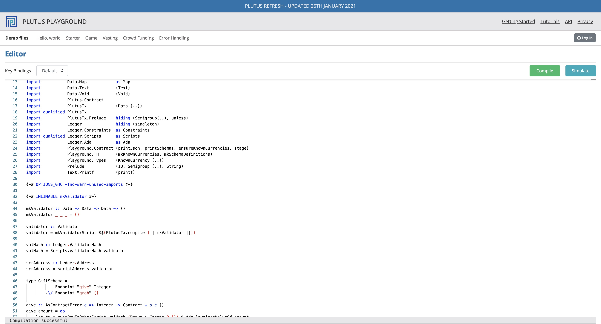

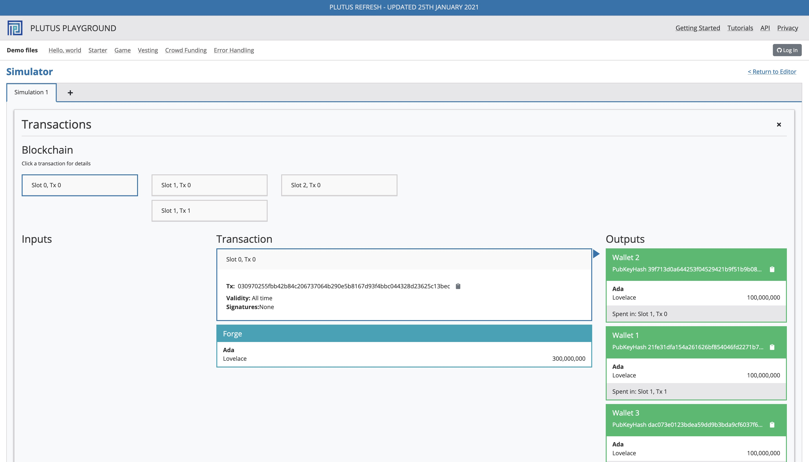
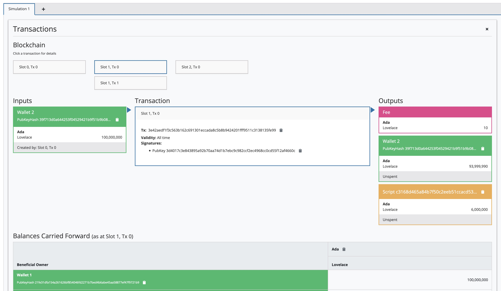
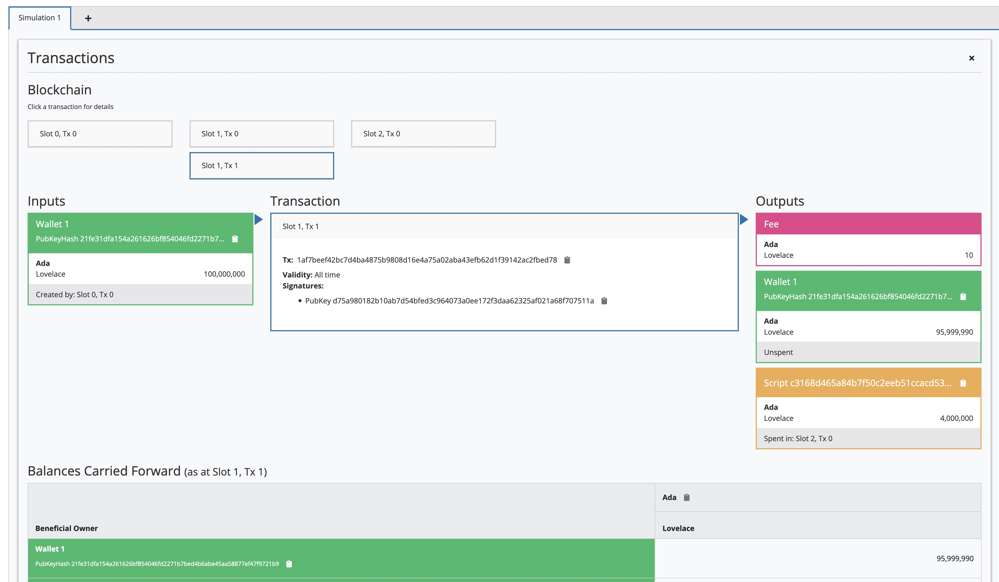
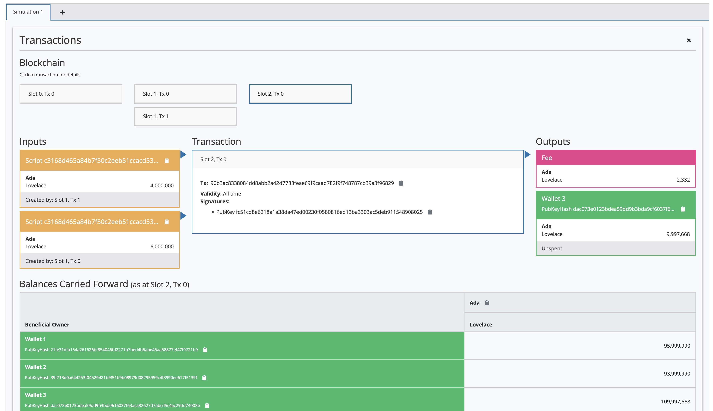
During Homework 1, the validator that we're creating will return True if and only if the redeemer is a tuple that consists of two matching boolean values. For example:
(True, True)(False, False)It turns out (to the Haskell novice) that this can be implemented in at least two ways. The first way is, sloppy...
-- This should validate if and only if the two Booleans in the redeemer are equal!
-- JD: mkValidator taes three parameters (dataum, redeemer and the Context) and returns, in this -- case a boolean value (as I imagine it often would).
mkValidator :: () -> (Bool, Bool) -> ScriptContext -> Bool
-- now we can call mkValidator with a unit datum, a tuple redeemer (bool, bool), and an empty -- context (ScriptContext = _ )
-- each | (pipe) is essentially an 'else if statement'
-- otherwise is the final else stateent
-- the equals sign is the return value
-- Thus, if the redeemer evaluates to (True, True) else if (False, False), the redeemer returns
-- True
-- otherwise the redeemer returns false
-- note that if the redeemer returns True, the UTxO is consumed, otherwise it is not
mkValidator () (a, b) _
| (a, b) == (True, True) = True
| (a, b) == (False, False) = True
| otherwise = FalseHowever, there is a much nicer way of implementing this, in 'short-form'
-- we retain the same line of code as previously written at the top
mkValidator :: () -> (Bool, Bool) -> ScriptContext -> Bool
-- traceIfFalse is a Plutus function that will return false under the condition
-- that a !== b, think of it like this:
-- traceIfFalse: Check The Condition ($) a == b (return the evaluation of a == b)
-- also, throw an 'exception' of sorts that is described as "Wrong Redeemer"
-- this is much nicer and much more concise
mkValidator () (a, b) _ = traceIfFalse "Wrong Redeemer" $ a == bTo re-iterate, the nicer way of writing this redeemer is as follows:
mkValidator :: () -> (Bool, Bool) -> ScriptContext -> Bool
mkValidator () (a, b) _ = traceIfFalse "Wrong Redeemer" $ a == bThen, we do have to set the redeemer type and the datum type (Haskell is strongly typed) This does, however, enable PlutusTx to compile our Haskell down into plutus-core code to be execute on chain.
mkValidator :: () -> (Bool, Bool) -> ScriptContext -> Bool
mkValidator () (a, b) _ = traceIfFalse "Wrong Redeemer" $ a == b
data Typed
instance Scripts.ValidatorTypes Typed where
-- ! DatumType is of type unit
type instance DatumType Typed = ()
-- ! RedeemType is of type tuple (Bool, Bool)
type instance RedeemerType Typed = (Bool, Bool)
-- ! compile validator to plutus-core
typedValidator :: Scripts.TypedValidator Typed
typedValidator = Scripts.mkTypedValidator @Typed
$$(PlutusTx.compile [|| mkValidator ||])
$$(PlutusTx.compile [|| wrap ||])
where
wrap = Scripts.wrapValidator @() @(Bool, Bool)
-- ! drop plutus-core validator script into a validator instance
validator :: Validator
validator = Scripts.validatorScript typedValidator
-- ! create a validator hash
valHash :: Ledger.ValidatorHash
valHash = Scripts.validatorHash typedValidator
-- ! create a script address for the validator
scrAddress :: Ledger.Address
scrAddress = scriptAddress validator
-- ! now we can use the validator on-chain to validate or invalidate (E)UTxOsSee Images:
Implementation Two:
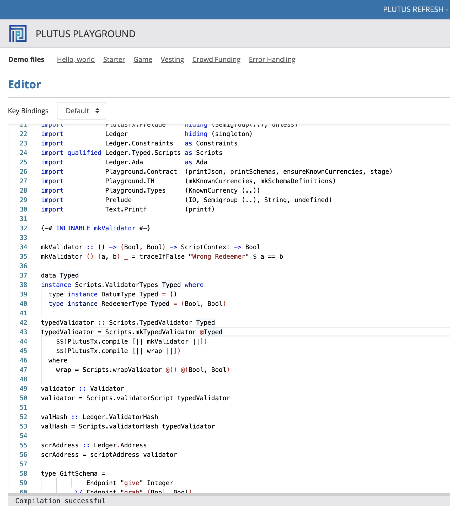
Compiled and Running on Local Test Blockchain:
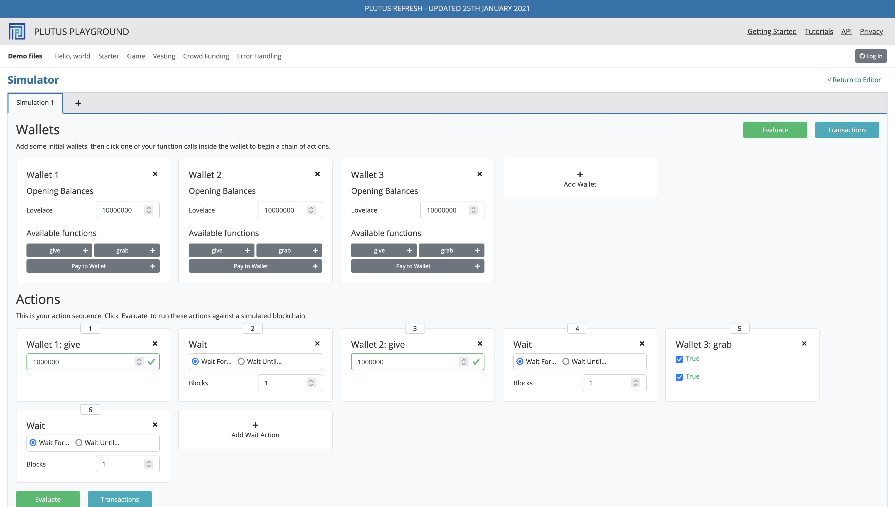
Implementation One -- Shabby:
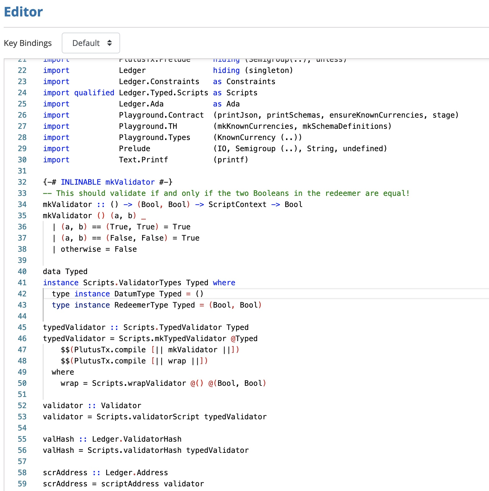
Transactional Data 1:
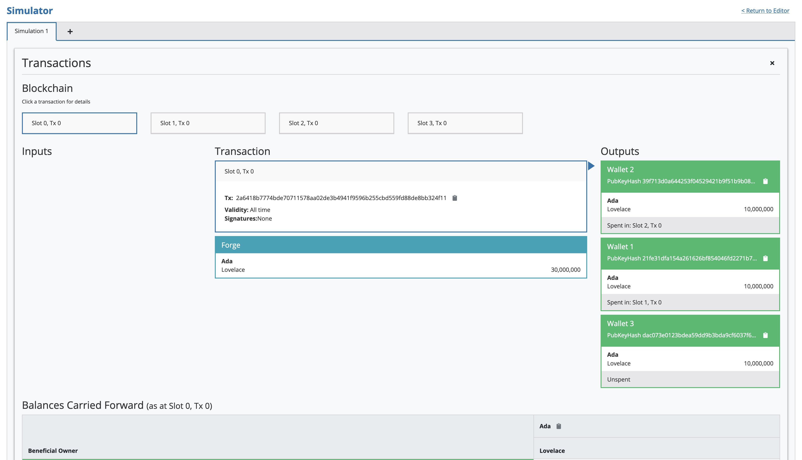
Transaction Data 2:
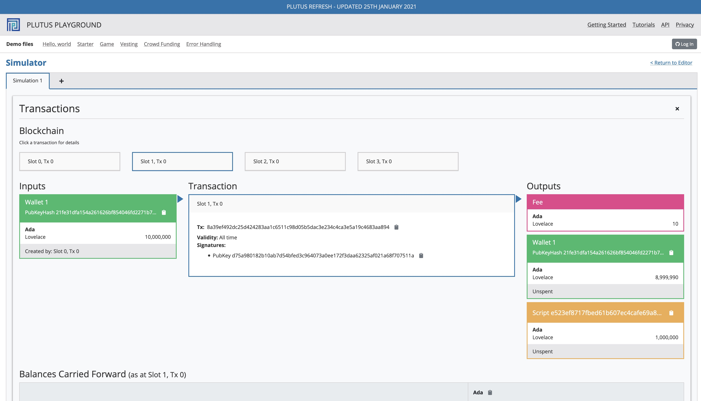
Transaction Data 3:
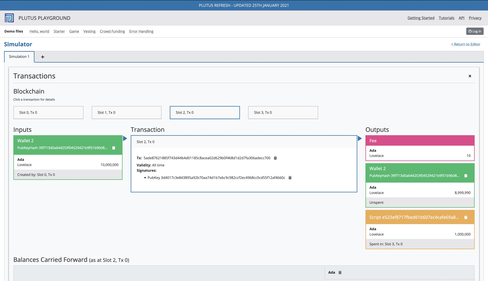
Transaction Data 4:
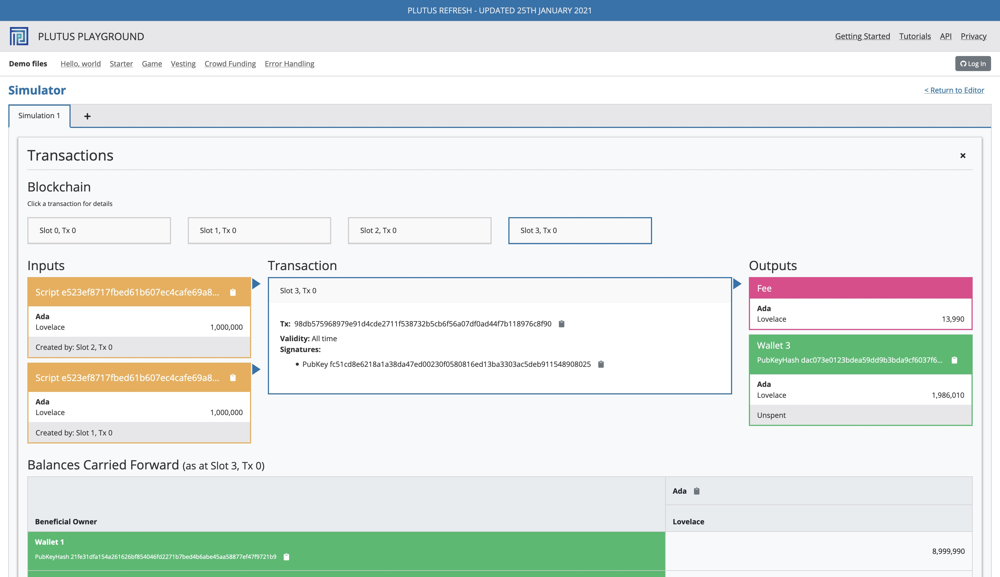
Transaction Data 5:
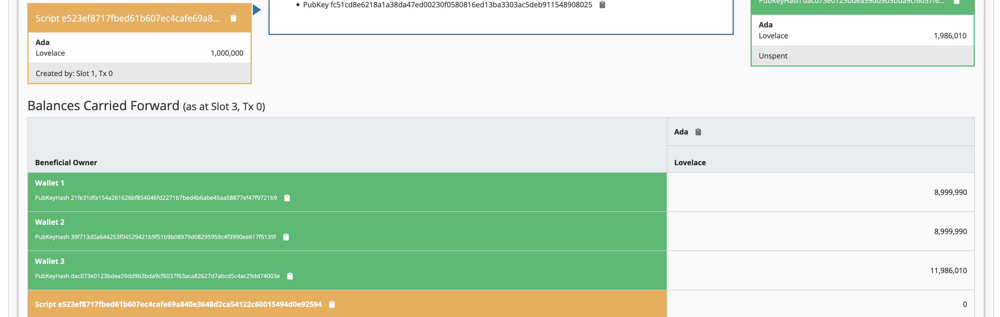
Transaction Data 6:
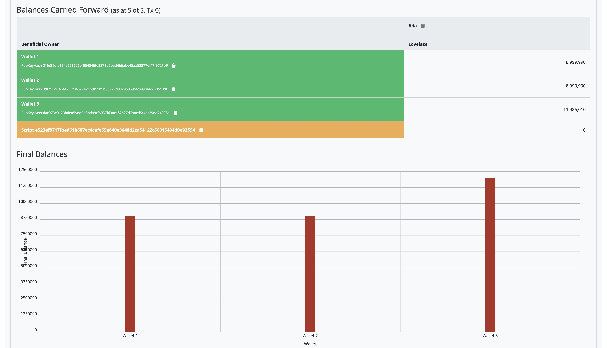
Log Data:
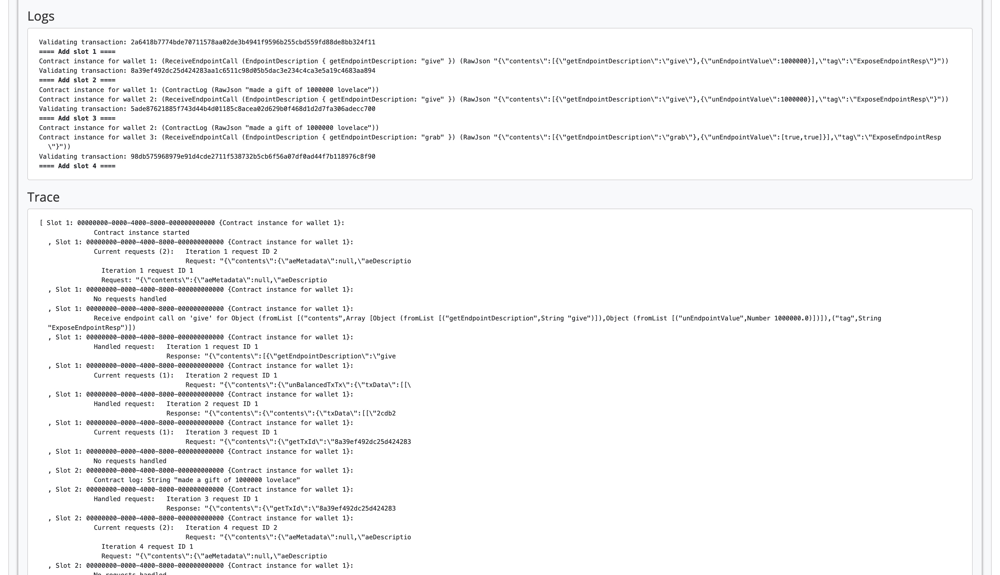
See My comments for additional details...
{-# LANGUAGE DataKinds #-}
{-# LANGUAGE DeriveAnyClass #-}
{-# LANGUAGE DeriveGeneric #-}
{-# LANGUAGE FlexibleContexts #-}
{-# LANGUAGE NoImplicitPrelude #-}
{-# LANGUAGE OverloadedStrings #-}
{-# LANGUAGE ScopedTypeVariables #-}
{-# LANGUAGE TemplateHaskell #-}
{-# LANGUAGE TypeApplications #-}
{-# LANGUAGE TypeFamilies #-}
{-# LANGUAGE TypeOperators #-}
{-# OPTIONS_GHC -fno-warn-unused-imports #-}
module Week02.Homework2 where
import Control.Monad hiding (fmap)
import Data.Aeson (FromJSON, ToJSON)
import Data.Map as Map
import Data.Text (Text)
import Data.Void (Void)
import GHC.Generics (Generic)
import Plutus.Contract
import qualified PlutusTx
import PlutusTx.Prelude hiding (Semigroup(..), unless)
import Ledger hiding (singleton)
import Ledger.Constraints as Constraints
import qualified Ledger.Typed.Scripts as Scripts
import Ledger.Ada as Ada
import Playground.Contract (printJson, printSchemas, ensureKnownCurrencies, stage, ToSchema)
import Playground.TH (mkKnownCurrencies, mkSchemaDefinitions)
import Playground.Types (KnownCurrency (..))
import Prelude (IO, Semigroup (..), String, undefined)
import Text.Printf (printf)
data MyRedeemer = MyRedeemer
{ flag1 :: Bool
, flag2 :: Bool
} deriving (Generic, FromJSON, ToJSON, ToSchema)
PlutusTx.unstableMakeIsData ''MyRedeemer
{-# INLINABLE mkValidator #-}
-- This should validate if and only if the two Booleans in the redeemer are equal!
mkValidator :: () -> MyRedeemer -> ScriptContext -> Bool
-- J.D: Implementing parameters for mkValidator
-- Datum: of type unit ... this can be empty
-- Redeemer: of type data ... contains this is our own record type containing two bools
-- Context: of type ScriptContext ... we can leave this as undefined for the purposes of this smart contract ...
mkValidator () (MyRedeemer x y) _ = traceIfFalse "Wrong Redeemer" $ x == y
-- J.D: Similarly to the previous homework, the Datum parameter instance is of type DatumType, and is an empty unit
-- This time, MyRedeemer is an instance of type: RedeemerType
data Typed
instance Scripts.ValidatorTypes Typed where
type instance DatumType Typed = ()
type instance RedeemerType Typed = MyRedeemer
-- We're essentially just doing the same as before...
-- except instead of (bool, bool) tuple, we're using @MyRedeemer to compile the Validator
typedValidator :: Scripts.TypedValidator Typed
typedValidator = Scripts.mkTypedValidator @Typed
$$(PlutusTx.compile [|| mkValidator ||])
$$(PlutusTx.compile [|| wrap ||])
where
wrap = Scripts.wrapValidator @() @MyRedeemer
-- exactly the same as Homework01
validator :: Validator
validator = Scripts.validatorScript typedValidator
valHash :: Ledger.ValidatorHash
valHash = Scripts.validatorHash typedValidator
scrAddress :: Ledger.Address
scrAddress = scriptAddress validator
-- Lars was kind enough to implement the remainder! Thank you! I hope this compiles...
type GiftSchema =
Endpoint "give" Integer
.\/ Endpoint "grab" MyRedeemer
give :: AsContractError e => Integer -> Contract w s e ()
give amount = do
let tx = mustPayToTheScript () $ Ada.lovelaceValueOf amount
ledgerTx <- submitTxConstraints typedValidator tx
void $ awaitTxConfirmed $ txId ledgerTx
logInfo @String $ printf "made a gift of %d lovelace" amount
grab :: forall w s e. AsContractError e => MyRedeemer -> Contract w s e ()
grab r = do
utxos <- utxoAt scrAddress
let orefs = fst <$> Map.toList utxos
lookups = Constraints.unspentOutputs utxos <>
Constraints.otherScript validator
tx :: TxConstraints Void Void
tx = mconcat [mustSpendScriptOutput oref $ Redeemer $ PlutusTx.toData r | oref <- orefs]
ledgerTx <- submitTxConstraintsWith @Void lookups tx
void $ awaitTxConfirmed $ txId ledgerTx
logInfo @String $ "collected gifts"
endpoints :: Contract () GiftSchema Text ()
endpoints = (give' `select` grab') >> endpoints
where
give' = endpoint @"give" >>= give
grab' = endpoint @"grab" >>= grab
mkSchemaDefinitions ''GiftSchema
mkKnownCurrencies []Simulation:
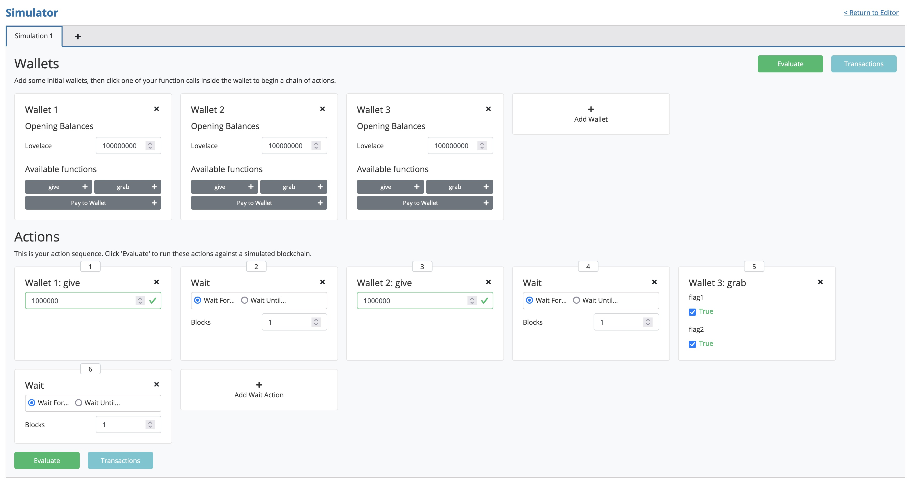
Tx0:

Tx4:
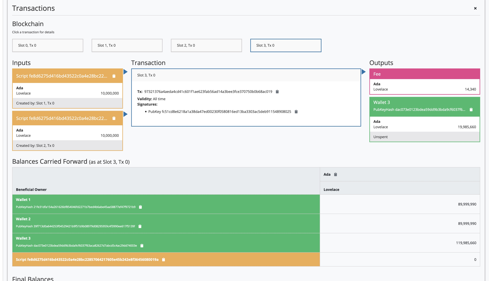
Balances, Logs:
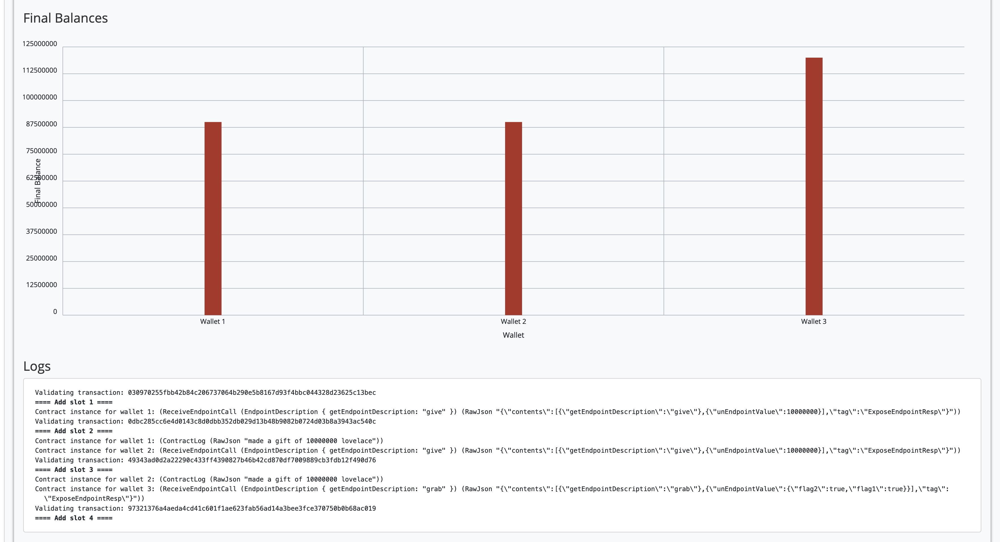
Trace:
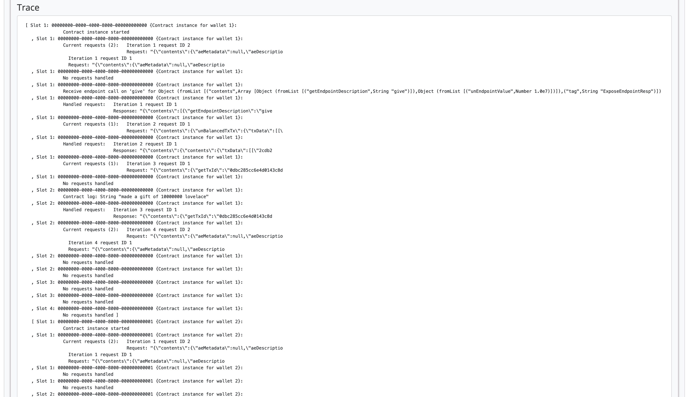
I may just leave this, as I've already done the homework, seems fairly trivial...
I did come back to this and give it some more thought, as initially it seemed fairly trivial (which it is, but still, given a couple of days of being away from the course, it's good to do a quick catch up.). The validator which is compiled by PlutuxTx is essentially laying out the conditions under which the UTxO may be spent. The Redeemer can be of many different types, but it is typical to use a 'record' type (self-defined) so long as it implements: isData. To have your redeemer always evaluate to false would simply require (and this is untested, but I assumed it works) some code, such as the following:
mkValidator () (a) _
| (a) == (True) = False
| (a) == (False) = False
| otherwise = FalseI'm not super familiar with Haskell, but I assume the following will also work:
mkValidator () () _ = traceIfFalse "Wrong Redeemer" $ False == True
-- | I imagine, even though there are no parameters within the redeemer
-- | This would always evaluate to False.During this lecture and the homework excises we learnt about the differences between a UTxO model and an EUTxO Model, but these were interceded during last lecture too. We leant about redeemers, datum and context (and by proxy: validators). However, we went into much more detail during this lecture. For example we implemented our own validators with our own redeemer types. These were very basic redeemers, and essentially just checked a simple expression: that X == Y using basic data types initially, but then we also did create our own record types that implemented isData. Furthermore, we also learnt about the compiler that processes Haskell and turns it into Plutus-core (Plutus-tx) and that essentially everything ends up being Lambda Calculus (System F Omega with Recursive Data Types). Finally, we completed two home-works.
To Be Continued...